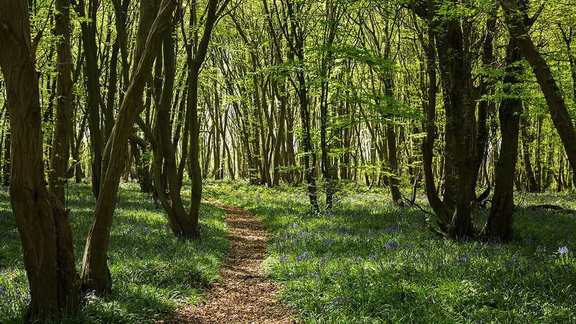
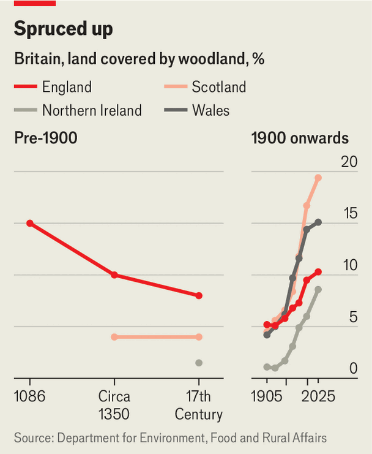
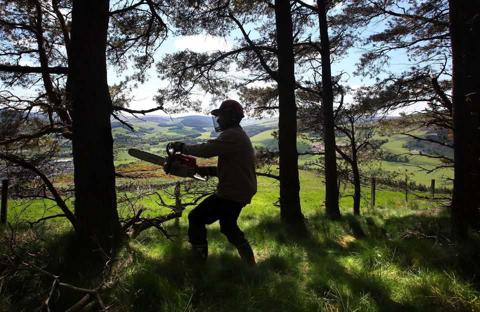

Trees are spreading in one of Europe’s least forested countries
Britain now needs to learn to cut them down

Aug 27th 2026
Near gloucester in western England, some 127,000 saplings are approaching the end of their first summer in their permanent home. Forestry England, a government agency, planted the trees last winter on an 88-hectare (217-acre) site that was recently a farm. Most of the trees are behind wire fences, which extend below ground to thwart wild boar. A deer bounds along, looking for a way in.
The infant woodland, known as Hoarthorns, is remarkable for a couple of reasons. It is the first substantial addition to the Forest of Dean, one of England’s oldest large woods, for two centuries. And the saplings, which are planted in neat lines, are enormously varied. Almost 40 species are growing on the site, most of them broadleaf trees such as oak and alder.

When the Forestry Commission (a government department of which Forestry England is part) was created after the first world war, it planted a very different sort of woodland. Kevin Stannard, a regional director of Forestry England, gestures towards a monotonous block of mature conifers on a hillside near the saplings. “If this was 1919,” he says, “what you would have seen here is what you see over there.”
Britain is getting better at planting trees. More than 13,000 hectares of new woodland was created in the year to April 2026; the country’s forested area grows by roughly 1% every two years. And the woods being planted are in some respects superior to those created in the past, with more varied species. Britain now needs to become better at cutting trees down.
The country has not been heavily forested for an enormously long time. Oliver Rackham, an ecologist, estimated that only about 15% of England was woodland when the Domesday Book was compiled in the 11th century—about half as much as in France or Germany today. Medieval forests were exploited. Their wood was used for fuel and timber; domestic pigs were let in to munch on acorns and beech nuts.
As more land was cleared for farming, the forests shrank. A 1667 law described the Forest of Dean, perhaps hyperbolically, as “totally destroyed”. Governments fretted about running short of timber to build warships. A large vessel like HMS Victory, Horatio Nelson’s flagship, required oak from almost 6,000 trees.

Then came two world wars, which drove up demand for timber (all those wooden crates to move shells around) while cutting imports. The saws whirred. By 1924 a mere 5% of England, and the same proportion of the rest of Great Britain, was forested (see chart). To boost production, the Forestry Commission planted fast-growing conifers such as sitka spruce, a native of north-west America. Private landowners followed suit. Trees began to spread, but the woods looked geometric, monotonous and dark.
Many of the woodlands that are planted today are different. Near the Wye River, Charlotte Bell of the Herefordshire Wildlife Trust has created three small woodlands on a farm. Poking out of the plastic tubes that protect them from deer, and looking rather sorry for themselves in a scorching summer, are oaks, small-leaved limes, Scots pines and 22 other species of tree and shrub. Her aim is to create a complex habitat at high speed.
The money for that wood comes ultimately from the Environment Agency, which funds projects that absorb carbon. It is gravy to the farmer, who finds the land much too steep for growing crops. Landowners who wish to plant trees can avail themselves of a variety of funds—and are more tempted to do so these days, because traditional farming subsidies are vanishing. The Welsh government prods them, insisting that every farm that receives subsidies must plant trees on at least one-tenth of a hectare.
Carbon absorption is just one of many justifications for planting woodlands in Britain. Habitat creation is another; some specialist woodland birds such as willow tits and lesser-spotted woodpeckers are faring badly. A third goal is recreation. Forestry England designates many of its new forests, including the one near Gloucester, as open-access land. Many woods created these days have wide “rides”, like medieval forests. Yet another justification is timber production (although nobody frets about warships these days).

Newly planted woods are expected to accomplish many more things than those of the past. They should look nice, meaning more or less like a natural wood, with a variety of species and scrubby edges. They should not spoil people’s views. They must not occupy good farmland, lest they get in the way of food production. The new woodland near Gloucester (see map) has a field-shaped hole in the middle, where cows will graze.
Horrified by the dreary conifer plantations created in the 20th century, many Britons want new woods to be planted with native trees. But trees live a long time, and the climate is changing quickly. When planting native trees Forestry England often uses seeds from farther south, including from France, reasoning that the plants will be more able to cope with the heat. The body also avails itself of two wonderful concepts. “Honorary native” and “near-native” species such as sycamores are not in fact native to Britain but are naturally moving northward as the planet warms, so they are tolerated.
Foresters balance these multiple objectives as best they can. But what should be done with Britain’s existing woods? Many of these have changed drastically over the past few decades, as the plantations created after the two world wars have grown up. A periodic study of about 100 woodlands, known as the Bunce sites, finds that the average tree and shrub has a cross-sectional area three times as large as the average in 1971. Shade-tolerant plants like bluebells are spreading through Britain’s mature woods; sun-loving ones like honeysuckle are gradually disappearing.

“The dense, dark woods that we know and love would be better with a bit of management,” says Luke Barley, a forester who advises the National Trust, a large conservation charity. Mr Barley argues in “Ancient”, a new book, that woodland owners should open the canopy by harvesting individual trees, roughly mimicking the practices of medieval foresters. Birds and insects should benefit.
It is not easy. Felling individual trees with chainsaws and hauling them out is not just more expensive than clear-cutting a plantation of one species; it is also more difficult and dangerous. As Mr Barley, who is periodically challenged by members of the public, can attest, it is not always popular. But something like it is necessary. Britain has done well to restore its woods. It needs to let them breathe. ■